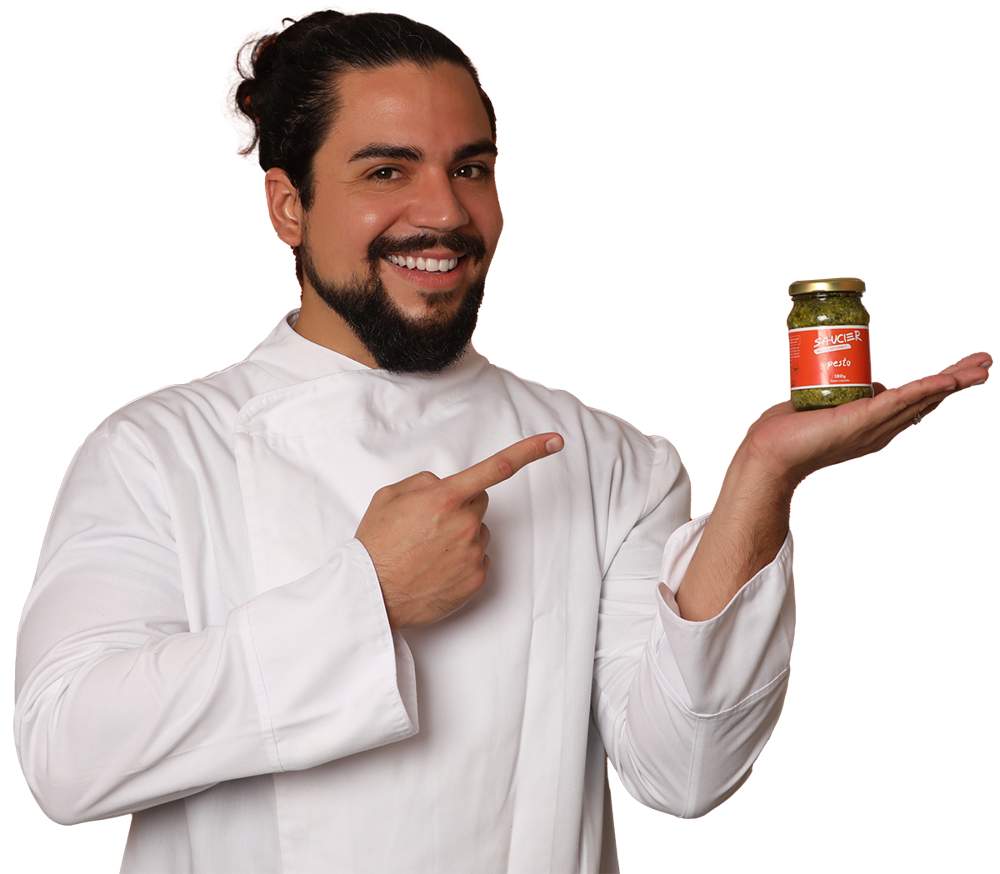
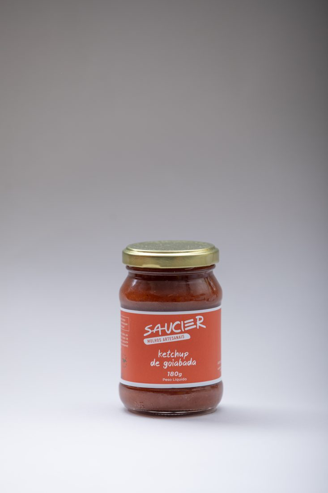
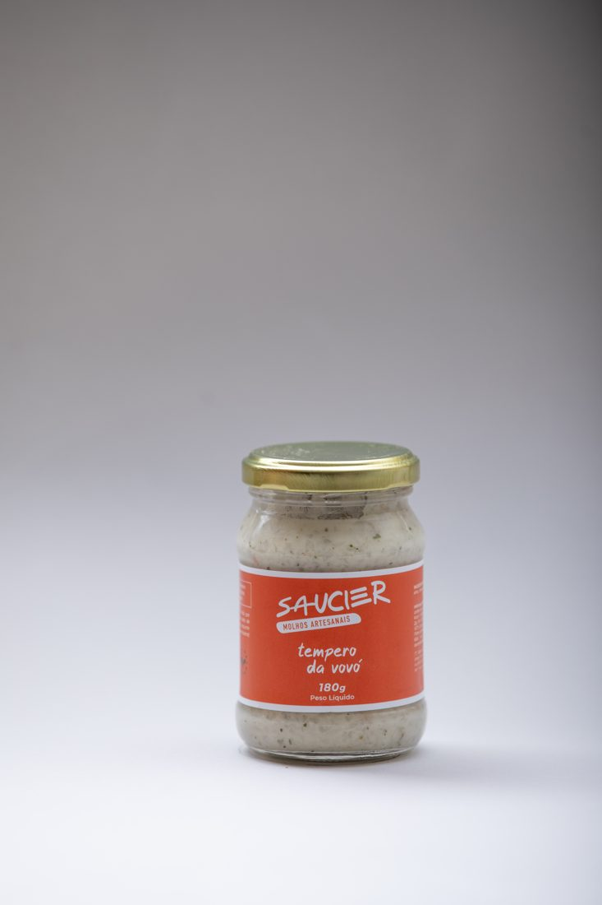
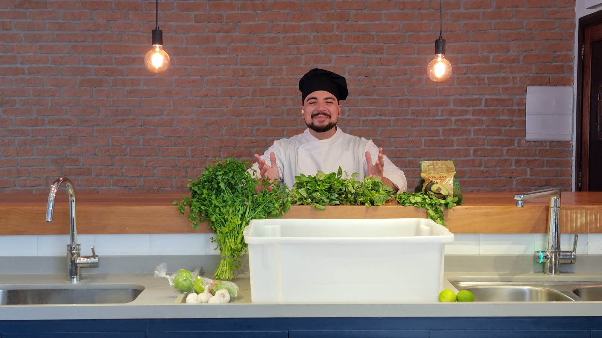

01
Introdução
A história dos molhos e a metodologia que usamos aqui na Saucier.
O melhor curso de molhos da internet. 50+ aulas gravadas em 10 módulos e 2 bônus, com receita, ficha técnica e informação nutricional de cada molho. Feito para quem quer comida incrível sem passar horas no fogão.
Compre agora R$ 290 à vista no Pix ou 12x no cartão · garantia de 7 dias · acesso vitalício
Organizadas por módulos, com receitas, ficha técnica e informações nutricionais de cada molho.
Transforme o prato do dia a dia em experiência, com o poder dos molhos artesanais.
Do entusiasta iniciante ao cozinheiro experiente: o curso atende o seu momento e eleva a sua cozinha.
Aprenda a preparar e armazenar molhos para o uso diário. Sabor de horas, em minutos.
Técnicas e "pulos do gato" da produção de molhos que normalmente ficam só na cozinha profissional.
Habilidade de cozinha não expira: o que você aprende aqui vai junto em cada prato pelo resto da vida.


Os molhos da casa: dos potes do delivery para a sua panela.
Uma variedade de molhos artesanais, armazenados para o uso diário. Você varia e enriquece os pratos de forma rápida, sem sacrificar o sabor.
Liberdade e criatividade para inovar e personalizar receitas, transformando cada refeição numa experiência sua.
Técnicas avançadas e dicas que normalmente ficam reservadas à cozinha profissional, aplicadas no seu fogão.
Para quem tem restaurante ou lanchonete: um toque especial no cardápio, com sabores que fidelizam clientes.





A história dos molhos e a metodologia que usamos aqui na Saucier.
Técnicas de conservação, os utensílios necessários e como manter tudo higienizado com segurança alimentar.
Os molhos de caldos de carne e ossos, como o Demi Glace, e por que eles são tão importantes para a gastronomia mundial.
Béchamel, Alfredo e até um molho de Alho Vegano exclusivo do curso Saucier.
Misturas de líquidos que normalmente não se misturariam: o famoso Hollandaise e a clássica Maionese, sem desandar.
Feitos a frio, à base de ervas: Chimichurri, Guacamole e a melhor receita de pesto da internet, exclusivíssima da Saucier.
O clássico molho de tomate, o super popular Ketchup e uma receita maravilhosa de Barbecue.
Receitas pungentes como a Mostarda e a Sriracha, além de surpresinhas que só o aluno Saucier experimenta.
Temperos práticos e duráveis que se encaixam em inúmeras receitas. O verdadeiro curinga do dia a dia.
Perfeitos para sobremesas e também para carnes, trazendo mais sabor e possibilidades para a sua gastronomia.
Mais de 3 anos de estudo e trabalho dedicados à produção de molhos
R$ 30.000Ficha técnica e tabela nutricional de mais de 50 receitas, com consultoria de nutricionistas
R$ 5.000Testes de receitas e ingredientes até chegar às combinações que mais agradam o paladar brasileiro
R$ 2.000Curso online sem mensalidade (a média do mercado é R$ 150 por mês, todo mês)
R$ 150/mêsBônus: a receita do Tempero da Vovó, receita de família da vó Vanda
INCALCULÁVELCrie suas próprias receitas de molho de pimenta, com a picância e a personalidade que você quiser. Um curso dentro do curso.
Aprenda a fazer molhos autorais, deixando a sua marca pessoal em cada preparo. O twist que vira assinatura.

Aqui é o Chef Mauricio Lacerda, fundador da Saucier. Minha paixão pela gastronomia nasceu segurando na barra da saia da vó Vanda, observando as receitas "de cabeça" e as medidas afetivas dela. O Tempero da Vovó é o maior legado desse amor.
Com o tempo, virei profissão: me formei chef executivo pelo SENAC e fiz o curso especializado em molhos da maior escola de gastronomia do mundo, a Le Cordon Bleu. Na pandemia, esse conhecimento foi fundamental para fundar a Saucier Molhos Artesanais: elaborei as receitas, comprei ingrediente, fiz entrega, gravei vídeo. Dessa jornada nasceu este curso.
Um bom molho é capaz de transformar qualquer prato numa experiência inesquecível. É só clicar no botão, meu broto.
SENAC · Le Cordon Bleu BrasilVocê tem 7 dias para testar, de graça. Entre no curso e, se sentir que não é para você, é só pedir reembolso que a Hotmart devolve todo o investimento. O risco é do chef.
O pagamento e a entrega são pela Hotmart, a maior plataforma de cursos do Brasil. Aprovou, chegou: o acesso cai no seu e-mail em minutos e você assiste do celular, tablet ou computador.
Acesso vitalício. Você assiste no seu ritmo, repete quantas vezes quiser e recebe as atualizações.
Garantia incondicional de 7 dias: se não for para você, a Hotmart devolve cada centavo, sem pergunta. O risco é do chef.
Cartão em até 12x, Pix ou boleto, direto no checkout seguro da Hotmart.
Não. As receitas usam panela, fogão e utensílios que você já tem. O módulo de utensílios lista tudo que é necessário.
Consegue. O curso começa do zero (higienização, utensílios, tipos de molho) e cada receita tem vídeo com o ponto exato mais ficha técnica para acompanhar.
Sim. Ao concluir as aulas, você emite o certificado de conclusão direto na plataforma.
Receita solta, dá. O que não dá é a ordem: no YouTube você coleciona vídeos; aqui você constrói base. Primeiro os molhos-mãe, depois as famílias de molhos, no fim o seu autoral. E cada receita tem ficha técnica com ponto e rendimento. É por isso que o Curso Saucier é o melhor curso de molhos da internet. Não é sobre ter mais vídeos, é sobre ter o caminho certo entre eles.
Serve. O bônus de Criação de Sabores ensina a desenvolver receitas autorais, que foi como a própria Saucier começou. Mas o coração do curso é para quem cozinha em casa.